地政学
ジャカルタはジャワ島北岸から群島国家を束ね、港湾、中央官庁、外交、軍、首都移転計画が重なります。低地の脆弱さは国家運営の課題でもあり、海と島々を結ぶ政治都市です。海峡交通と地方統合の重みも意識されます。

🇮🇩 インドネシア / アジア / World City Atlas
ジャワ海に面した低地の巨大都市圏です。港湾、行政、イスラムの生活、渋滞、洪水、移民労働が島嶼国家の重心を形づくります。
都市の骨格
ジャカルタは港、政府機関、金融街、工業郊外、バイク交通、モスク、市場、排水路を一つの緊密な生活圏として動かしています。
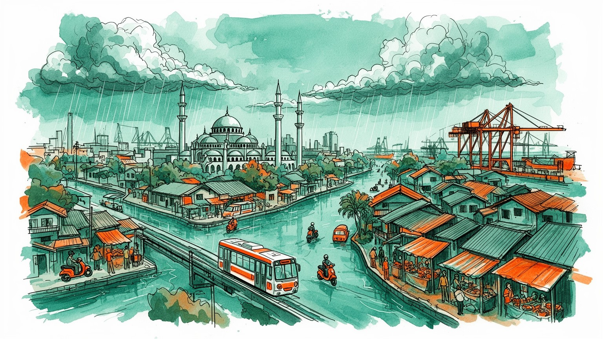
ジャカルタはジャワ島北岸から群島国家を束ね、港湾、中央官庁、外交、軍、首都移転計画が重なります。低地の脆弱さは国家運営の課題でもあり、海と島々を結ぶ政治都市です。海峡交通と地方統合の重みも意識されます。
金融、行政、港湾、製造、小売、メディア、配車アプリが都市圏を動かします。周辺工業団地と非公式労働、家事労働、屋台、配送が結びつき、成長の厚みと不安定さを同時に見せます。移民の仕事と技能形成も広がります。
イスラムの祈りが生活時間を刻み、教会、寺院、中国系の記憶、ベタウィ文化、地方出身者の言葉が重なります。市場、学校、モスク、テレビ、音楽が多民族国家の日常を形づくります。祝祭と食の作法も記憶を運びます。
旧市街、モナス、イスティクラル、コタ、港、モール、屋台、島々は観光の入口です。同時に通勤渋滞、住宅格差、洪水への備えが住民の毎日を左右します。週末の海辺、サッカー観戦、家族外出も都市の余暇を支えます。
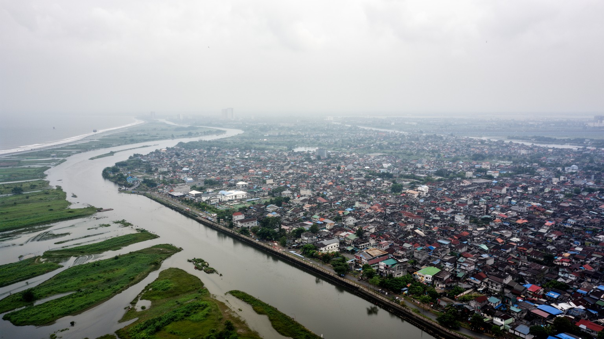
ジャカルタの都市構造は、ジャワ島北岸の低い土地と海への近さから読む必要があります。市街地には複数の川と運河が通り、雨季の水、上流の開発、沿岸の高潮、地盤沈下が生活と都市計画を直接揺さぶります。港湾と旧市街は海上交易の入口として成長し、内陸へ延びる道路と鉄道、郊外住宅地、工業団地が巨大な首都圏を押し広げました。中心部の高層ビルやモールだけを見ると近代的な大都市に見えますが、その足元では排水路、堤防、ポンプ、橋、低地の住宅が都市の安全を支えています。北部のカンポンでは水害への備えが日常化し、南部や周辺都市へ向かう通勤は地形と所得の差を映します。海と川は商業を開いた一方、気候変動と都市化によって脆弱性も増しました。ジャカルタを理解するには、広場や行政庁舎だけでなく、水がどこから来てどこへ抜けるのかを見ることが重要です。都市の成長は地図上の拡大だけでなく、水を管理する能力との競争でもあります。沿岸の埋め立てや防潮堤計画は、住宅、漁業、観光、港湾機能の利害をぶつけます。雨が強まる日には、濁った水と運河の匂いが通学路や市場の営業、病院への移動まで左右します。さらに、南部の水源地や上流の住宅開発は、中心部だけの努力では洪水を抑えられないことを示します。排水と土地利用を広域で調整できるかが、低地都市の将来を左右します。
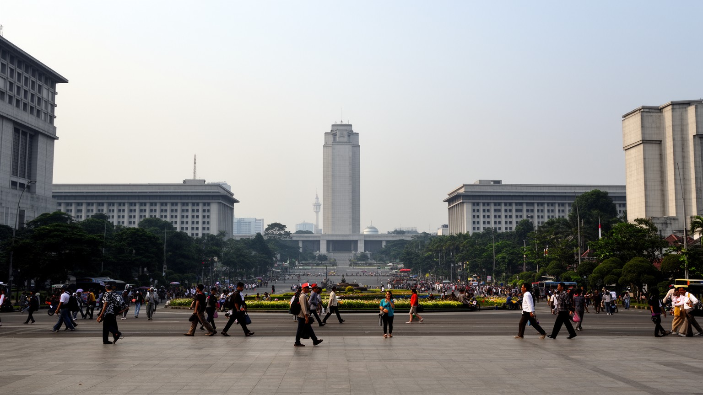
ジャカルタは長くインドネシア政治の中心であり、大統領府、国会、省庁、大使館、国営企業、全国メディアが集まります。独立後の国家建設、軍政期、民主化運動、地方分権、宗教と政治の緊張は、この都市の広場、大学、裁判所、テレビ局を通じて可視化されてきました。首都機能の一部をカリマンタン島へ移す計画は、過密、洪水、地盤沈下、ジャワ島偏重を是正する試みであり、ジャカルタがすぐに周辺化することを意味しません。金融、外交、人材、企業本社、文化産業、空港と港湾の力は残り、政治都市から経済都市への比重変化が進みます。住民にとって首都移転は遠い政策ではなく、土地価格、官僚の移動、公共投資、行政サービスへの期待に関わります。ジャカルタは国家の顔であり続けながら、首都の称号に頼らない都市力を問われています。権力の集中が生んだ利便と負担をどう分け直すかが、次の都市像を決めます。抗議集会や選挙の季節には、道路、広場、大学、SNS、ラジオ、民放テレビの討論が政治の舞台になります。多民族国家の合意を作る難しさは、中央政府の建物だけでなく、住民の会話や地域組織にも表れます。地方自治体、中央省庁、民間企業の権限が交差するため、政策の速度は常に調整に左右されます。首都らしさは式典だけでなく、災害時に全国を動かす通信、予算、判断の集中にも宿ります。
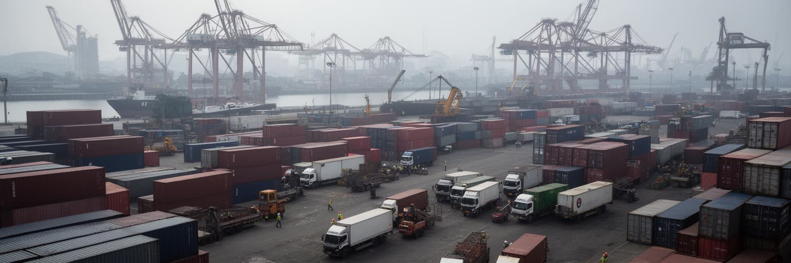
ジャカルタの経済を支える重要な装置が、北部のタンジュンプリオク港と周辺の物流網です。インドネシアは島々から成る国家であり、首都圏の港は輸入品、工業部品、食品、燃料、消費財、輸出貨物を国内外へつなぐ結節点になっています。コンテナヤード、倉庫、トラック、税関、保税地域、工業団地、卸売市場は、高層オフィスとは別の都市の顔を作ります。港の効率が悪ければ、全国の物価や工場の納期に影響が出るため、物流は単なる裏方ではありません。周辺道路の渋滞、排気ガス、夜間労働、港湾労働者の安全、沿岸住民の生活環境は、経済成長の影で見えにくい論点です。電子商取引や配車アプリが伸びるほど、倉庫からバイク配送までの細かな移動が増え、都市の道路空間はさらに混み合います。ジャカルタの港を読むことは、群島国家の一体性、製造業の競争力、消費都市の日常を同時に読むことでもあります。海に開く都市は、世界市場と近所の食卓を同じ物流で結んでいます。港湾拡張は雇用を広げる一方、漁村や沿岸の暮らしを変えます。遠い島から届く米や魚、工場へ向かう部品、海外へ出る製品は、すべて首都圏の混雑した道路と倉庫を通って動いています。港で働く人びとの技能、通関の制度、道路の舗装状態は、統計に出にくい競争力です。物流が滞ると、遠い島の小売店や首都の屋台まで影響を受け、潮の匂いとトラックの音が都市の朝を動かします。
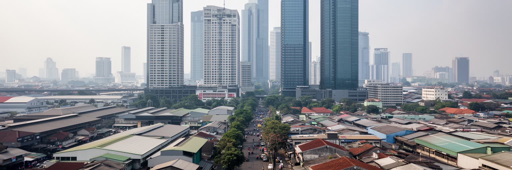
ジャカルタ中心部には銀行、保険、通信、法律、広告、国営企業、外資系企業の本社機能が集まり、南部の業務地区や高級モールは都市の成長を象徴します。一方で、首都圏経済の厚みは中心部だけでは説明できません。ブカシ、タンゲラン、チカラン、デポックなど周辺地域には工場、物流施設、労働者住宅、大学、病院が広がり、自動車、食品、化学、繊維、家電、電子部品の生産とサービスがつながっています。オフィスで決まる投資や販売戦略は、郊外のライン作業、倉庫、通勤バス、清掃、警備、食堂の仕事によって実体を持ちます。労働組合、最低賃金、非正規雇用、外資誘致、土地収用をめぐる議論は、成長都市の足元にある緊張を示します。若い労働者は地方から機会を求めて移り、家族への仕送りや職業訓練を通じて都市と故郷を結びます。ジャカルタは消費と金融の街であると同時に、広い工業首都圏の司令塔でもあります。数字の大きさは、中心と周辺の分業を見て初めて意味を持ちます。デジタル決済や配車、オジェック、宅配の成長は新しい仕事を増やしましたが、収入の変動と社会保障の薄さも広げました。工場労働者、事務職、運転手、屋台主、学生アルバイトが同じ都市圏で違う速度の経済を生きています。職業訓練や大学進学は若者に上昇の機会を与えますが、家賃と通勤費がその利益を削ることもあります。成長の分配を見れば、都市経済の強さと脆さが同時に見えます。
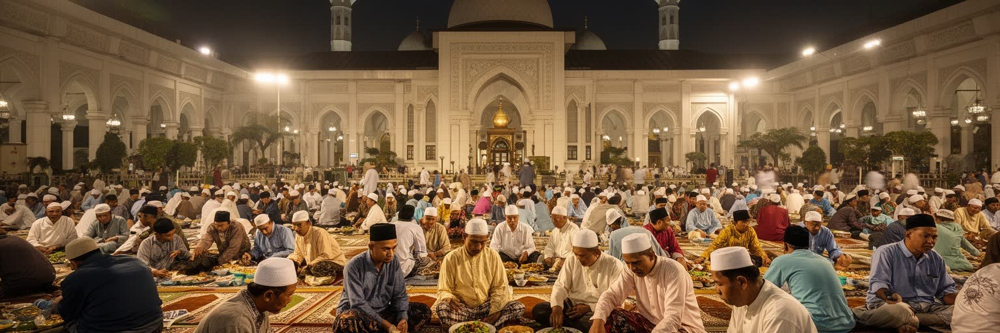
ジャカルタの日常には、イスラムの祈りと行事が深く組み込まれています。モスクからのアザーン、金曜礼拝、ラマダンの断食明け、レバラン前後の帰省は、交通、商業、勤務時間、学校、家庭の予定を大きく動かします。東南アジア最大級のイスティクラル・モスクは国家的な宗教空間であり、周辺の教会や寺院と近接する景観は多宗教国家の理念を象徴します。とはいえ宗教は調和の飾りだけではなく、政治的動員、道徳観、ジェンダー、教育、少数派の権利をめぐる議論にも関わります。イスラム金融、ハラール産業、宗教学校、慈善活動、葬儀、結婚式は都市経済と社会関係を支えます。地方から来た住民は、それぞれの言葉と宗教実践を持ち込み、モスクや市場、親族ネットワークを通じて居場所を作ります。ジャカルタの信仰を読むことは、礼拝施設の数を数えることではありません。祈りの時間が仕事のリズムを変え、祝祭が道路を満たし、倫理が政治と消費を動かす都市の仕組みを見ることです。ラマダン中の夕暮れには、揚げ物の匂い、屋台、子ども、高齢者、職場の同僚が食卓を囲み、都市の緊張が一時ほどけます。宗教的な規範は若者の服装や恋愛、娯楽にも影響し、個人の自由との対話を続けています。慈善の寄付や近隣の助け合いは、行政サービスが届きにくい場所で生活を補う力にもなります。信仰は個人の内面だけでなく、都市の福祉、教育、政治参加の回路として働きます。
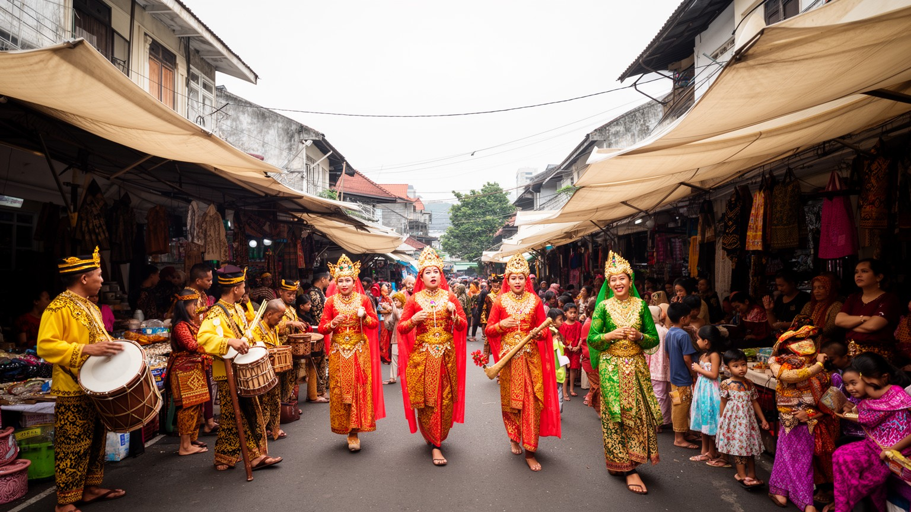
ジャカルタの文化は、首都として全国の人が集まることによって作られてきました。先住的な都市文化として語られるベタウィは、マレー、ジャワ、スンダ、中国、アラブ、欧州の影響を受け、音楽、舞踊、婚礼、料理、言葉、家屋の意匠に混交の歴史を残します。ですが現代の市街地では、スンダ人、ジャワ人、バタック人、ミナンカバウ人、中国系住民、東部インドネシア出身者、外国人労働者が近くで暮らし、学校、職場、市場、テレビ、ラジオ、SNSで都市の共通語を作ります。屋台の料理、結婚式場、宗教行事、サッカー応援、ダンドゥットやインディー音楽は、民族差を越えて共有される一方、差別や政治的な線引きも消えません。再開発が進むほど古いカンポンやベタウィの記憶は周縁へ押し出されやすく、保存は観光化と生活維持の間で揺れます。ジャカルタを単一のインドネシアらしさで見ると、移民都市の複雑さを見落とします。多文化性は博物館の展示ではなく、毎日の食事、言葉、隣人関係の中で調整されています。テレビや動画配信は首都の話し方を全国へ広げ、地方の音楽や笑いを再び首都に戻します。家庭内では出身地の言葉が残り、職場ではインドネシア語が共通の距離を作ります。その往復が都市文化を更新します。学校の友人関係や職場の昼食は、互いの宗教行事や食の制限を学ぶ場にもなります。摩擦を抱えながら共存を続ける現実こそ、首都文化の基礎です。
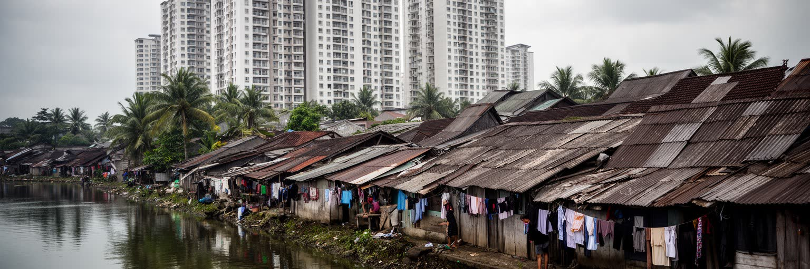
ジャカルタの暮らしは、超高層マンション、ゲート付き住宅地、古いカンポン、河川沿いの密集住宅、郊外の分譲地が近接することで特徴づけられます。所得の高い世帯は自家用車、私立学校、冷房付きの住まい、モールを中心に生活圏を組み立てる一方、低所得層や新来の労働者は家賃、通勤距離、水道、排水、土地権利の不安を抱えます。カンポンは貧困の象徴として単純化されがちですが、近隣の助け合い、小商い、ワルン、路地のフットサル、子育ての場として強い生活基盤でもあります。河川改修や高速道路、駅前再開発は防災や移動を改善する一方、立ち退きや家賃上昇を招き、住民のネットワークを断ち切ることがあります。都市の住宅問題は、戸数を増やせば済む話ではありません。職場への距離、学校、礼拝、親族、屋台の収入、洪水リスクを含めて考える必要があります。ジャカルタの格差は、遠く離れた地区の差ではなく、同じ通りの反対側に見えることが多いです。その近さが都市の活力と緊張を同時に生みます。家事労働者や警備員、運転手は富裕層の住宅地を毎日支えますが、自分の住まいは長い通勤の先にあることも多いです。住宅の安全性は、階層と職業の違いをもっとも率直に映す指標になります。子どもの通学、高齢者の通院、礼拝への距離を考えると、住まいは単なる寝る場所ではありません。再開発の補償が現金だけで済まない理由は、そこで失われる関係が生活そのものだからです。
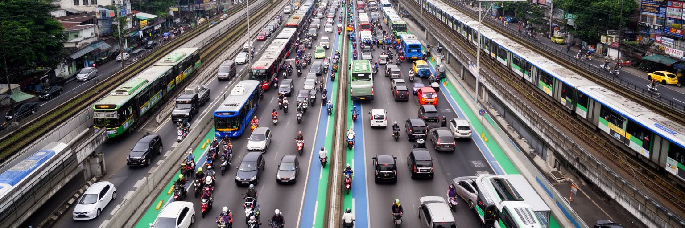
ジャカルタの交通は、長く渋滞とバイクの都市として語られてきました。自家用車、オートバイ、ミニバス、バス専用道、配車アプリ、通勤鉄道が重なり、通勤時間は住宅選択や家族の時間を大きく左右します。道路の混雑は経済損失であるだけでなく、大気汚染、交通事故、ストレス、配送遅延、通学の負担を生みます。近年はMRT、LRT、空港鉄道、通勤電車、トランスジャカルタの整備が進み、中心部と郊外を公共交通で結ぶ都市像が強まっています。駅周辺の再開発は便利さを増す一方、土地価格を押し上げ、古い商店や低所得住民を移動させる可能性もあります。配車アプリは移動を柔軟にしましたが、運転手の収入、事故リスク、プラットフォーム手数料という労働問題も抱えます。歩道や横断環境は場所によって差が大きく、高齢者、子ども、障害者にとって使いやすい都市にはまだ課題が多いです。ジャカルタの交通改革は、速く移動するためだけでなく、誰が都市の時間を失っているのかを問い直す作業でもあります。朝の駅では郊外からの通勤者が集中し、夜はオジェックのクラクション、MRTの案内、バスのブレーキ音の中で配送員が食事や買い物を運び続けます。公共交通が広がるほど、駅まで歩ける道、雨を避ける屋根、運賃の負担が生活の質を左右します。交通は都市の公平性を測る物差しでもあります。遠く安い住宅に住む人ほど移動時間を失い、中心部の職場に近い人ほど家族や学びに使える時間を得やすいです。
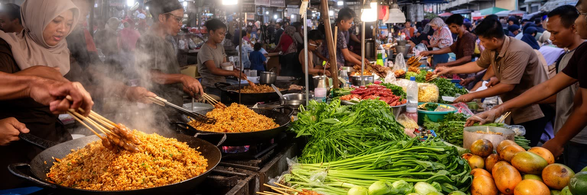
ジャカルタの食文化は、屋台、ワルン、夜市、伝統市場、モールのフードコート、高級レストラン、オンライン配送が重なっています。ナシゴレン、サテ、ソト・ブタウィ、ガドガド、バクソ、マルタバ、甘い飲み物は、観光客の名物である前に、通勤途中の朝食、夜勤明けの食事、家族の外食、断食明けの楽しみとして都市の時間を作ります。市場では野菜、魚、香辛料、布、生活用品が売られ、地方から届く産物と住民の財布が直接出会います。食は多民族都市の記憶でもあり、パダン料理、中国系の麺料理、スンダ料理、ジャワ料理、アラブ系の香りが同じ街に並びます。衛生、価格、屋台の営業権、歩道の占有、配達員の労働は、食の楽しさの裏にある現実です。モールの快適な空間は中間層の余暇を支え、タナアバンやグロドックの商いは布、電子機器、贈答品の買い物を動かします。ジャカルタを味わうとは、料理名を並べることではなく、誰が材料を運び、誰が深夜まで作り、誰がその場で近況を語るのかを見ることでもあります。食卓は宗教とも結びつき、ハラール表示や断食月の営業が商売の形を変えます。値上がりする食材は家計を直撃し、市場の小さな価格差が住民の判断を細かく動かします。屋台の椅子に座る時間は、近所の情報交換でもあります。注文、支払い、配達評価までがスマートフォンに移っても、鉄板の音と甘い茶の香りは路地に残り、食は人と人の距離を測る都市の基本であり続けます。
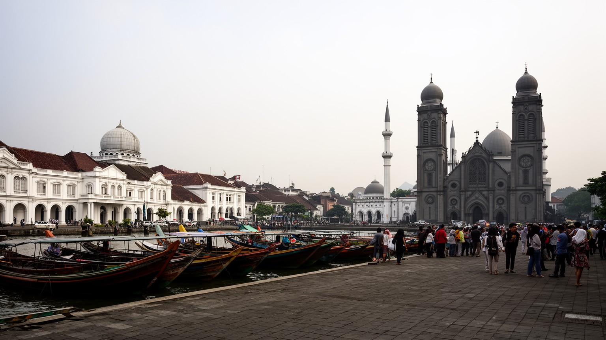
ジャカルタ観光は、古都の静けさを期待すると少し戸惑うかもしれません。魅力は整った名所だけでなく、交通量、湿度、屋台の匂い、モールの冷房、古い港、宗教施設、植民地期の街路が一度に押し寄せる都市体験にあります。コタ・トゥアにはオランダ植民地時代の建物と広場が残り、スンダ・クラパ港では木造船と海上交易の記憶が見えます。モナスと独立広場は国家の物語を示し、イスティクラル・モスクと大聖堂の近接は多宗教国家の象徴として歩く価値があります。北の島々は大都市の喧騒から離れた海の顔を見せますが、観光開発と環境保全の緊張も抱えます。巨大モール、カフェ、ライブ、インディー音楽の小箱、夜の屋台は若い中間層の都市文化を映します。観光客がジャカルタを短く通過点にすると、国の政治と生活を支える厚みを見逃しやすいです。旧市街から市場、宗教施設、港、公共交通へ視線を広げると、インドネシアの近代化と日常の複雑さが見えてきます。暑さや渋滞を前提に歩く都市だからこそ、短い移動にも休憩と計画が必要になります。博物館や広場だけでなく、鉄道駅、食堂、船着き場を結ぶと、観光は生活の観察へ変わります。植民地期の建物は保存されるほど美しく見えますが、その背後には交易、支配、労働の歴史があります。名所を消費するだけでなく、港と広場の関係を読むことが旅を深くします。Persijaの試合日やバドミントンの熱気まで見ると、余暇の都市像も立ち上がります。
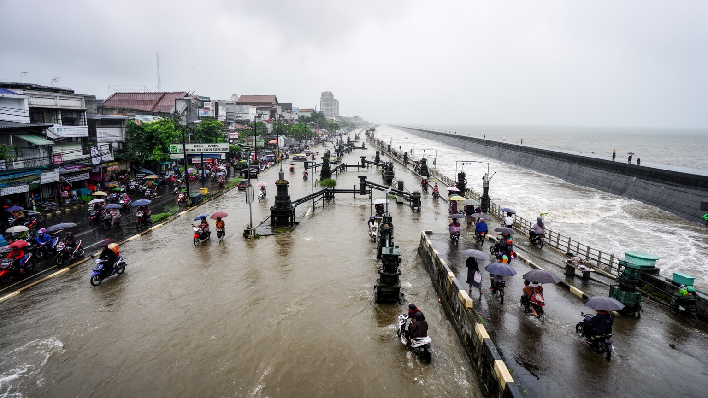
ジャカルタの環境問題は、気候変動、地盤沈下、地下水利用、海面上昇、雨季の豪雨、河川のごみ、上流域の開発が絡み合う複合的なリスクです。北部の沿岸では土地が沈み、高潮や排水不良のリスクが高まり、堤防やポンプに頼る生活が重なります。洪水は交通や商業を止めるだけでなく、学校、病院、屋台、日雇い仕事、低地の住宅を直撃し、所得の低い住民ほど復旧に時間がかかります。行政は河川改修、排水路整備、貯水池、緑地、上水道の改善を進めますが、立ち退きや土地権利、予算、自治体間の調整が常に壁になります。大気汚染も深刻で、車やバイク、工場、発電、乾季の煙害が健康を脅かします。気候リスクは将来の抽象的な不安ではなく、雨が降るたびに仕事へ行けるか、子どもが学校へ行けるか、家財を守れるかという日常の現実です。ジャカルタの持続可能性は、豪華な再開発だけでなく、弱い場所に住む人を水と暑さから守れるかで測られます。地下水を使わざるを得ない地域では、生活の必要が沈下を進める矛盾もあります。ごみ処理、上水道、緑地、公共交通を同時に整えなければ、環境対策は一部の地区だけの改善で終わってしまいます。学校の休校、屋外労働の危険、感染症の広がりは、環境問題を健康と教育の論点に変えます。堤防の高さだけでなく、避難情報が届く速さ、スマートフォンの警報、近隣の支えも命を守ります。備えは雨音とともに暮らしへ戻ります。
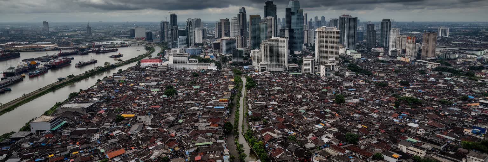
ジャカルタは、単に東南アジアの大都市というだけでは説明できません。群島国家の政治を束ねる場所であり、金融と港湾物流の中枢であり、イスラムの生活時間が都市の速度を刻み、地方からの移民が全国的な文化を混ぜ合わせます。高層ビル、巨大モール、MRTの駅は成長への自信を見せますが、洪水に弱い低地、地盤沈下、渋滞、住宅格差、非公式労働、立ち退きの問題は同じ地図の上にあります。首都移転が進んでも、ジャカルタの重要性は消えません。むしろ政治の称号から少し距離を置くことで、都市そのものの産業、生活、文化、環境対応が問われます。観光では旧市街や独立広場を歩き、住民の視点では通勤時間、祈り、市場、学校、家賃、水害への備えを見る必要があります。ジャカルタの力は、混雑や不便を抱えながらも、人と物と情報を絶えず受け入れて組み替える柔軟さにあります。成長の明るさと水辺の脆弱さを同時に読むことで、この都市の本当の輪郭が立ち上がります。経済規模の数字は重要ですが、それだけでは祈りの時間、洪水後の片付け、深夜の配送、郊外からの長い通勤を説明できません。ジャカルタを読む視点は、国家と近所、海と道路、信仰と消費を一枚の地図に置くことで深まります。だからこそ、港の労働者、官庁街の職員、市場の店主、郊外の学生、サッカーを見る家族を別々に見ないことが大切です。彼らの移動と選択が重なって、群島国家の首都圏は毎日更新されています。